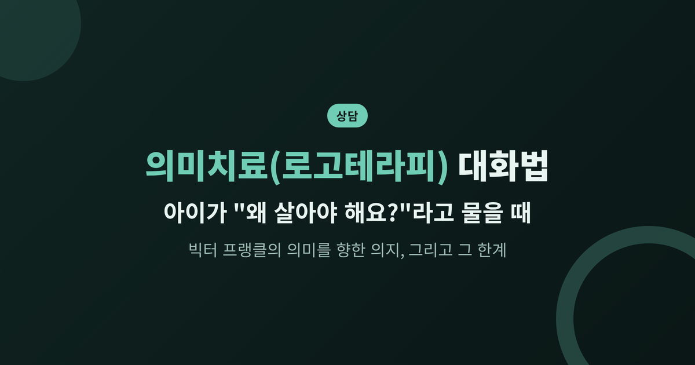
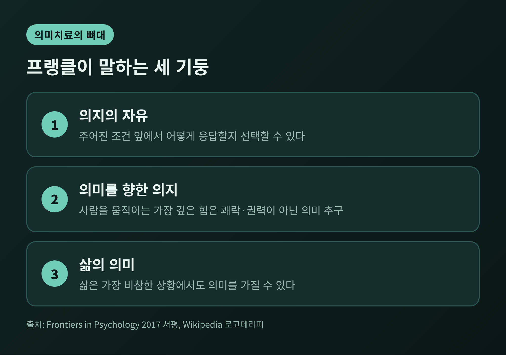
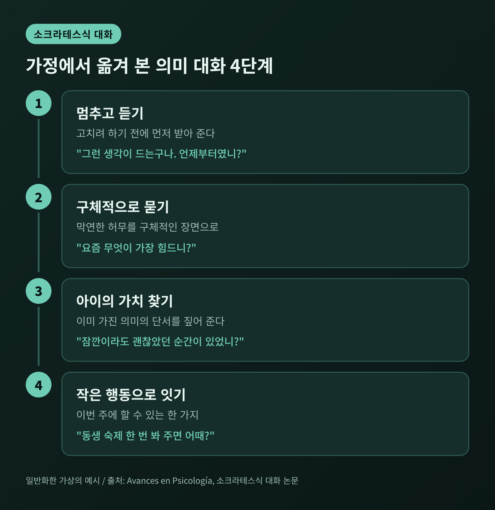
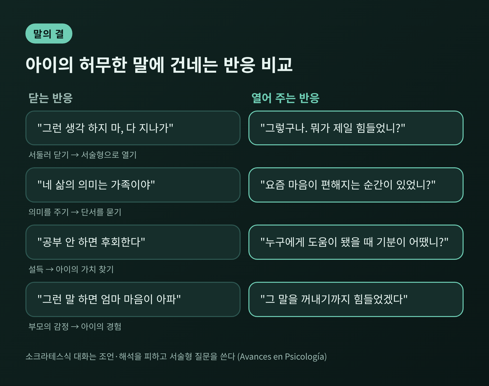
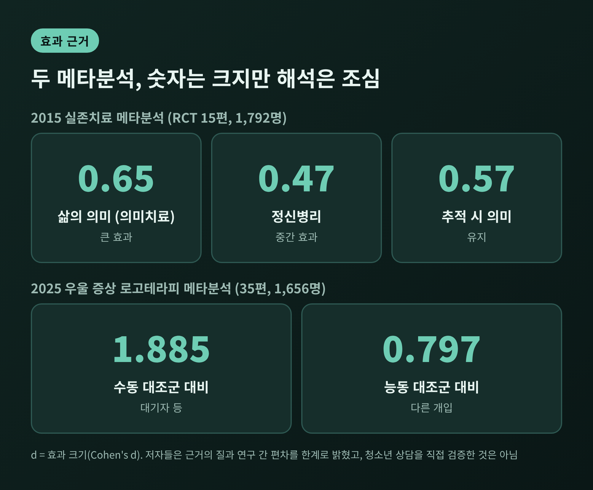
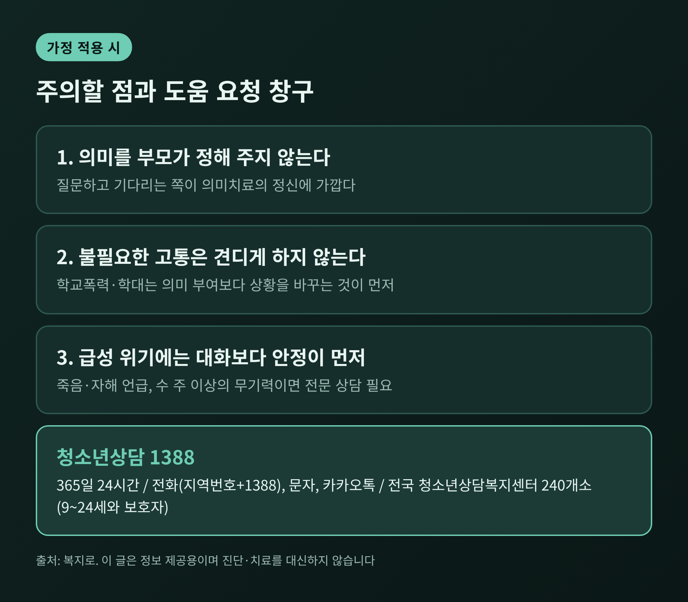
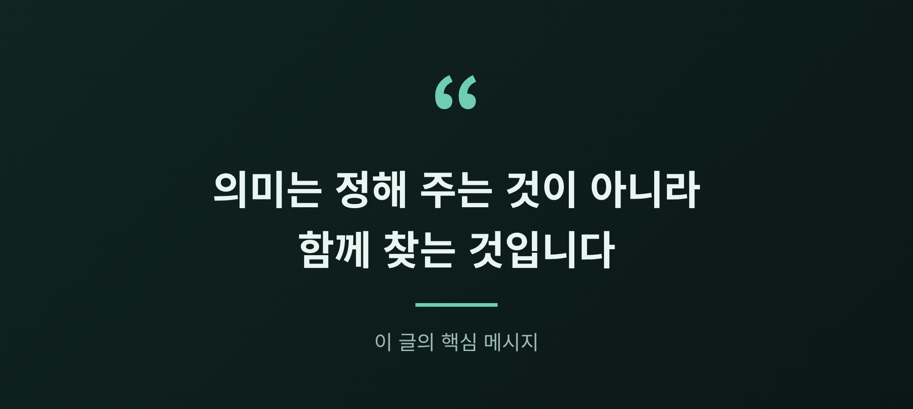

세 줄 요약
오늘은 빅터 프랭클의 의미치료, 곧 로고테라피를 정리해 보려 합니다.
청소년 자녀가 "왜 살아야 하는지 모르겠다"고 말할 때, 가족이 어떤 대화를 건넬 수 있는지에 초점을 두었습니다.
이론의 핵심, 대화법, 그리고 반드시 알아야 할 한계까지 차례로 살펴보겠습니다.
※ 이 글의 사례는 여러 상황을 일반화한 가상의 예시이며, 특정 개인과 무관합니다.
빅터 프랭클은 1905년 빈에서 태어난 정신과 의사입니다. 십대 시절 프로이트와 편지를 주고받았고, 대학에서는 아들러의 이론을 공부했습니다. 프로이트와 아들러에 이어 '제3 빈 심리치료학파'로 불리는 것이 그가 세운 로고테라피입니다.
프랭클은 젊은 시절 청소년 상담에 일찍 관여했습니다. 1928년 무렵 빈에서 청소년을 위한 무료 상담소를 조직했고, 학기 말 특별 상담 활동 뒤 학생 자살이 크게 줄었다는 기록이 남아 있습니다. 다만 구체적인 수치는 확인되지 않습니다.
1942년 가족과 함께 테레지엔슈타트 수용소로 끌려갔고, 1944년에는 아우슈비츠로 옮겨졌습니다. 아버지와 어머니, 아내를 모두 수용소 체제 속에서 잃었습니다. 1945년 4월 해방된 뒤 쓴 책이 『죽음의 수용소에서』입니다. 그는 이 책을 9일 만에 구술했다고 전해집니다. 1991년 미국 의회도서관은 이 책을 미국에서 가장 영향력 있는 책 10권 가운데 하나로 꼽았습니다.
프랭클이 말하는 의미치료의 뼈대는 세 가지입니다.

한 문장으로 줄이면 이렇습니다. 사람은 의미를 잃을 때 가장 크게 흔들린다는 관점입니다.
그렇다면 의미는 어디서 오는 것일까요. 프랭클은 세 가지 가치를 제시했습니다.
첫째는 창조적 가치입니다. 일을 하고, 무언가를 만들고, 행동으로 세상에 기여하는 것입니다. 청소년에게는 동아리 활동이나 맡은 역할, 작은 프로젝트가 여기에 해당합니다.
둘째는 체험적 가치입니다. 경험을 누리거나 누군가를 만나는 데서 오는 의미입니다. 음악, 자연, 친구와의 대화, 가족과의 식사가 그렇습니다.
셋째는 태도적 가치입니다. 바꿀 수 없는 고통 앞에서 어떤 태도를 취하는가입니다. 프랭클은 고통, 죽음, 죄책을 '비극의 삼원소'로 불렀고, 이 상황에서도 사람은 태도를 선택할 수 있다고 보았습니다. 『죽음의 수용소에서』에 소개된 문장으로, 상황 속에서 자기 태도를 택하는 것은 "마지막 자유"라는 표현이 있습니다.
여기서 반드시 짚어야 할 단서가 있습니다. 프랭클 연구소 저널의 글은 피할 수 없는 고통과 불필요한 고통을 엄격히 구분합니다. 불필요한 고통을 견디는 것은 의미가 아니라 마조히즘이라는 경고입니다.
학교폭력, 가정 내 학대, 따돌림 같은 일에 "견디면 의미가 생긴다"고 말해서는 안 됩니다. 그런 상황은 바꾸는 것이 먼저입니다. 태도적 가치는 바꿀 수 없는 것 앞에서만 쓰는 개념입니다.
예를 들어 보겠습니다. 중학교 3학년 아이가 저녁 식탁에서 "공부해서 뭐 하냐, 왜 사는지 모르겠다"고 말합니다. 부모는 흔히 두 가지로 반응합니다. 서둘러 설득하거나, 당황해서 화제를 돌립니다.
의미치료는 다른 길을 제시합니다. 핵심 도구는 소크라테스식 대화입니다.
이 대화는 강의가 아니라 안내입니다. 상담자가 답을 쥐고 가르치지 않고, 내담자가 스스로 통찰에 이르도록 질문합니다. 질문은 '무엇을, 어떻게, 무엇을 위해, 누가, 언제' 같은 서술형 위주이며, 해석과 조언은 피합니다. 상담자의 가치를 강요하지 않는다는 원칙도 있습니다.
가정에서 옮겨 보면 대화는 대략 네 단계로 흐릅니다.

1단계는 멈추고 듣는 것입니다. 고치려 하지 않고 먼저 받아 줍니다. "그런 생각이 드는구나. 언제부터 그랬는지 말해 줄 수 있니?"
2단계는 구체적으로 묻는 것입니다. "요즘 무엇이 가장 힘드니?", "그때 어떤 기분이었니?" 이런 질문은 막연한 허무를 구체적인 장면으로 바꿉니다.
3단계는 아이의 가치를 찾는 것입니다. "요즘 잠깐이라도 괜찮았던 순간이 있었니?", "누구에게 도움이 되었을 때 기분이 어땠니?" 아이가 이미 갖고 있는 의미의 단서를 짚어 줍니다.
4단계는 작은 행동으로 잇는 것입니다. 거창한 사명이 아니라 이번 주에 할 수 있는 한 가지입니다. 동생에게 공부 알려 주기나 반려동물 산책 같은 일입니다.
프랭클의 방법에는 탈숙고(dereflection)라는 기법도 있습니다. 문제에 지나치게 몰입한 사람의 주의를 타인이나 의미 있는 활동으로 돌리는 방식입니다. 자기 문제에만 골몰해 오히려 더 힘들어지는 아이에게 시도해 볼 수 있는 접근입니다.
말의 결도 중요합니다. 같은 마음에서 나와도 전달되는 방식이 다릅니다.

한 연구 자료는 기법만 있고 따뜻함이 없으면 이 방법이 무너진다고 지적합니다. 판단을 잠시 내려놓고 아이의 세계를 있는 그대로 받아들이는 태도가 먼저입니다.
의미치료가 효과적인지 궁금하실 수 있습니다. 결론부터 말하면, 가능성은 보이지만 단정하기엔 이릅니다.
2015년 학술지 『Journal of Consulting and Clinical Psychology』에 실린 실존치료 메타분석은 무작위 대조 시험 15편, 참가자 1,792명을 분석했습니다. 이 가운데 '의미치료' 계열은 삶의 의미에서 큰 효과(d=0.65), 정신병리와 자기효능감에서 중간 정도 효과(각 0.47, 0.48)를 보였습니다. 추적 시점에서도 의미 효과는 0.57로 유지되었습니다. 그러나 저자들은 근거 기반이 작고 질이 낮아 결과가 잠정적이라고 밝혔습니다.
2025년에는 우울 증상을 다룬 로고테라피 메타분석이 나왔습니다. 35편, 총 1,656명이 대상입니다. 대기자 같은 수동 대조군과 비교하면 효과가 매우 컸지만(d=1.885), 다른 개입 같은 능동 대조군과 비교하면 0.797로 줄었습니다.

숫자를 읽을 때 조심할 점이 있습니다. 2025년 분석은 연구 간 차이가 매우 커서 결과가 들쑥날쑥했고, 아시아 밖의 연구가 더 필요하다고 저자들이 말합니다. 추적 결과는 5편에 불과합니다.
무엇보다 이 연구들은 청소년과 가족 상담을 직접 검증한 것이 아닙니다. 이 글에서 소개한 대화법이 아이에게 효과가 있다는 증거는 확인되지 않았습니다.
청소년의 의미감과 마음 건강의 관계를 보여 주는 조사는 있습니다. 중국 고등학교 3학년 621명을 대상으로 한 2025년 연구에서, 삶의 의미를 느끼는 정도와 우울은 음의 상관(r=-.50)을 보였습니다. 소외감이 이 관계의 약 86%를 설명하는 통로였습니다. 다만 한 시점에 한 학교에서 조사한 것이어서 의미가 우울을 낮춘다고 인과를 말할 수는 없습니다.
의미를 느끼는 아이일수록 소외감이 덜하다는 점은 시사점이 있습니다. 가족 대화가 아이를 이어 주는 역할을 할 수 있다는 정도로만 받아들이시길 권합니다.
이론 자체에 대한 비판도 있습니다.
일부 연구자는 로고테라피를 과학적 학파라기보다 인생철학이나 가치 체계에 가깝다고 봅니다. 1961년 롤로 메이는 내담자가 의미를 찾지 못할 때 상담자가 의미를 대신 제공해 내담자의 책임이 줄어들 수 있다고 지적했습니다. 프랭클은 내담자의 자유와 책임을 강조하며 반박했습니다.
프랭클 자신의 종교적 배경과 고통의 경험이 의미 개념을 형성했다는 지적도 있습니다. 다른 세계관을 가진 가정에는 덜 맞을 수 있다는 뜻입니다.
가정에서 적용할 때 특히 주의할 점은 두 가지입니다.

첫째, 의미를 부모가 정해 주지 않습니다. "이게 네 삶의 의미야"라는 말은 대화를 닫습니다. 질문하고 기다리는 쪽이 의미치료의 정신에 가깝습니다.
둘째, 급성 위기에서는 대화법보다 안정이 먼저입니다. 급성 위기에서는 안정화가 우선일 수 있고, 우울증 같은 경우 약물 치료와 병행되는 일이 많다고 알려져 있습니다.
아이가 죽음이나 자해를 이야기하거나, 몇 주 이상 무기력과 수면·식사 변화가 이어진다면 가정 대화만으로 감당하려 하지 않으시길 바랍니다. 정신건강의학과나 청소년상담복지센터의 전문 상담이 필요합니다.
청소년상담1388은 365일 24시간 전화(지역번호+1388), 문자, 카카오톡 등으로 이용할 수 있습니다. 전국 청소년상담복지센터는 240개소이며, 9세에서 24세 청소년과 보호자가 대상입니다. 이 글은 정보 제공이 목적이며 진단이나 치료를 대신하지 않습니다.
정리하면 이렇습니다.
프랭클이 남긴 가장 쓸모 있는 생각은 답을 주는 사람이 되지 말고 질문하는 사람이 되라는 것입니다. 그리고 이 질문은 전문가의 도움 곁에서 가장 안전하게 힘을 냅니다.

"의미는 정해 주는 것이 아니라 함께 찾는 것입니다."
아이가 다시 "왜 살아야 해요?"라고 묻는다면, 저는 먼저 숨을 고르고 되묻겠습니다. 무엇이 그렇게 만들었는지 천천히 들려 달라고요.